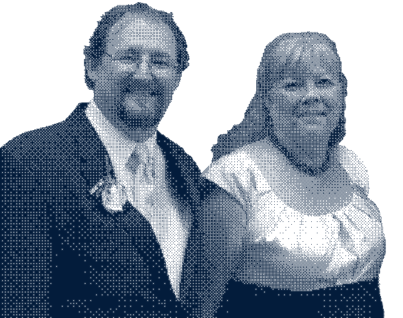
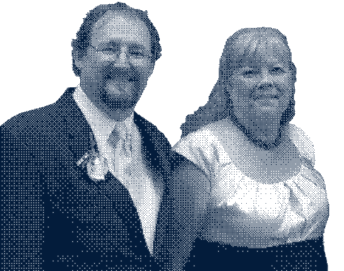

Madison, WI

These well wishes come from 265 miles away from my grandparents and extended family on my dad's side. My grandma always makes sure to tell me how proud she is to have me as a granddaughter, and still sends a tip for having a good report card!
Lincoln, NE

These notes come from 435 miles away from my sister, her boyfriend CJ, and their puppy Finn. They are goofy and full of love, and always let me know they miss me!
Brookfield, WI

These loving scribbles come from 323 miles away from my maternal grandma, my Auntie Janie, and her puppy Sadie. They are dedicated card senders, never missing a holiday and always sending cheer and stickers!
Sussex, WI
These letters come from my mom and dad from 319 miles away! We've been apart for 5 years, but they always remember to send cards for every little holiday (usually along with treats). Every message is always sent with hugs and love!
Sacramento, CA

These messages come from 1,893 miles away from my Aunt Chris and Uncle Jim and their ever-growing family. Each and every cousin, both big and small, send well wishes and support all the way from across the country. They make sure to let me know they all love me even if we don't get to see each other all that often!
Wauwatosa, WI
 

These letters come from 329 miles away from my Aunt Mary and Uncle Mike and my two closest cousins, Nicole and Brian. They always make sure to tell me they love me just the way I am, and that they are grateful for the love and support we have for each other.